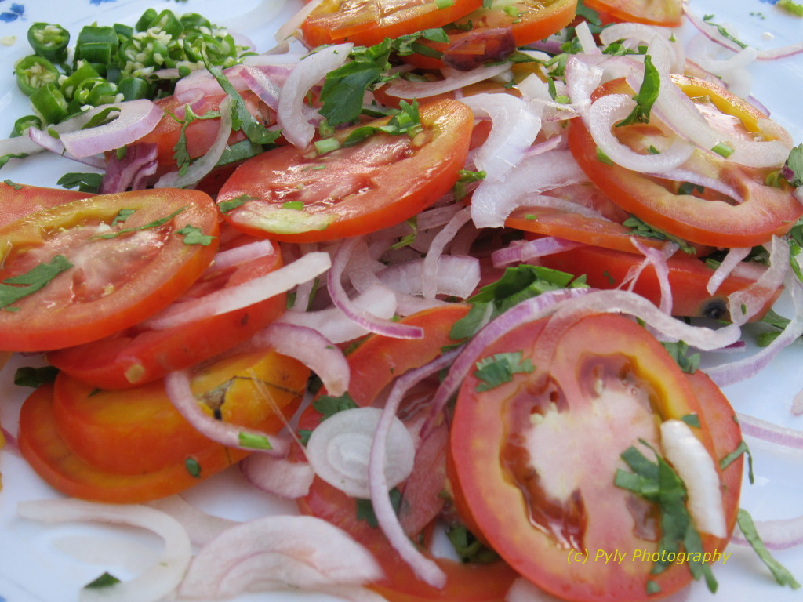

<DOCTYPE html>
  <html>
  <head>
  <title>Kachumbari</title>
  <link href="css/styles.css"rel="stylesheet"type="text/css">
  <link href="../css/bootstrap.css"rel="stylesheet"type="text/css">
  <link href="../css/aos.css"rel="stylesheet"type="text/css">
  <script src="../js/scripts.js"charset="utf-8"></script>
  <script src="../js/aos.js" charset="utf-8"></script>
  <script src="../js/jquery-3.3.1.js" charset="utf-8"></script>
</head>
    <body>
      <div class="container-fluid">
      <div class="float-left-area">
        <div data-aos="fade-up-right" data-aos-duration="1000" class="inner-left">
        <h2><b>About us</b></h2>
        <p>Culinary Experience is a webpage where we get to show you how to prepare local <b>Kenyan Cuisine.</b></p>
      </div>
      </div>
      <div data-aos="fade-up-right" data-aos-duration="1000" class="float-right-area">
        <div class="inner-right">
          <ul class="nav nav-tabs">
            <li class="active"><a>Kachumbari</a><li>
            </ul>
            <h3><b>Ingredients Needed</b></h3>
            <ol>
              <li>3 Tomatoes.</li>
              <li>1 large Onion.</li>
              <li>Olive oil.</li>
              <li>Some salt.</li>
              <li>Vinegar.</li>
            </ol>
            <h3><b>Procedure</b></h3>
            <ul>
              <li>Chop the onions.</li>
              <li>Soak the onions in salt water for five minutes.</li>
              <li>Chop the tomatoes and place in a small bowl.</li>
              <li>Dry the onions from salt water.</li>
              <li>Mix the onions and tomatoes.</li>
              <li>Drizzle some vinegar and olive oil and mix.</li>
              <li>Enjoy.</li>
            </ul>
            
        </div>
      </div>
            </ul>
          </div>
      <script>
    AOS.init();
  </script>
    </body>
  </html>
